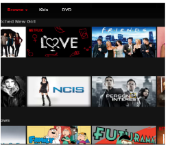
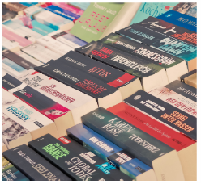
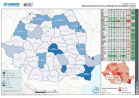

Movie Recommender System

Objective:
Using ratings collected from real users along with movie details and user demographics to recommend top movies thus working to enhance the user experience for an online streaming service. Recommender Systems are capable of learning your watching pattern in turn provides you with relevant suggestions.Deliverables:
Recommender Systems which learns from the users’ watching patterns to recommend the top movies based on the users’ expectation.Article Recommendation System

Objective:
To create an automatic recommendation system that uses prior knowledge of a user’s rating for some books to suggest new titles to add to his collection. In the online world, a user is flooded with information from different sources in which it is not uncommon for a user to change between online portals or consume content from portals that merge articles from different sources. Huge such huge amount of information, it becomes difficult to select the article that a user will like. Consequently, users stop the consumption of news or lower it down. To overcome the problem of information overloading (difficulty in making a decision caused by the presence of too much information, recommender systems can be used. Using article aggregation platform where articles from different domains such as technology, politics, and news and so on are shared by its users and then these articles are recommended on the basis of reading habits. They have a rating system for articles under which the users when they read the article rate it on a scale of 1 to 5.Deliverables:
To figure out what they can achieve with a collaborative filtering or content based filtering system by accurately predicting ratings for each user article combination.Phishing Detection
Objective:
To identify if there is a threat of phishing or not based on certain factors Phishing is a kind of cybercrime where attackers pose as known or trusted entities and contact individuals through email, text, or telephone and ask them to share sensitive information. Users may also be prompted to enter credit card information or bank account details as well as other sensitive data. Once this information is collected, attackers may use it to access accounts, steal data and identities, and download malware onto the user’s computer. To avoid this, the only solution is to identify if there is a threat of phishing or not based on certain factors. This is really important from the security point of view. It will be extremely helpful if we could determine if there is a possible threat of phishing.Deliverables:
Web app/ mobile app is built to identify if there is a threat of phishing or not based on certain factors.Migration Prediction

Objective:
To forecast the inflow of migrants into various European countries from Ukraine. The project aims to forecast the inflow of migrants into various European Countries. By doing so, the government authorities can be proactive in preparing to meet their needs and advocate for the political will to provide safe passage into Europe. Assistance is needed to be provided to the migrants. That’s why forecasting is of prime importance.Deliverables:
A Dashboard to visualize /forecast /infer the information from the actual scenario from migration data through online learningHate Speech Classification in tamil
Objective:
To detect hate speech classification Hate speech is a common occurrence on the internet. Often social media sites like Face book and Twitter face the problem of identifying and censoring problematic posts while weighing the right to freedom of speech. Spam filtering and profanity detection are similar related problems.Deliverables:
Mobile app/ web app to detect hate speechClassify emergency vehicle from non-emergency vechiles
Objective:
To classify the images of vehicles as either belonging to emergency vehicle or non-emergency vehicle category. For automating the traffic signals, the emergency vehicles include police cars, ambulance and fire brigades are detected from non-emergency vehicles using image detection techniques.Deliverables:
Mobile app/web app for Detection based automation of the traffic signalsRoad lane segmentation for self-driving cars
Objective:
To build various models to perform lane segmentation tasks for the given images. Self-driving cars require a deep understanding of their surroundings, in order to understand where to drive, when to stop, when to speed up, how much distance to keep between consecutive cars and so on. The pixel level accuracy has to be built on understanding the scene, recognize the road, pedestrians, cars, and sidewalks.Deliverables:
Dashboard to perform lane segmentation tasks from the given imagesHuman Pose estimation
Objective:
To detect the posture of human body shape. An AI system has to be developed to detect the right posture for a particular Yoga pose or batting posture of cricket player. Data must comprise of 30, 000 images with annotated key points.Deliverables:
AI based personalized system to detect the right posture for a cricket player to do batting.Forecasting website traffic
Objective:
To forecast the traffic for a web portal using deep learning. Web traffic refers to the number of sessions on the website in a given time period. Accurately estimating the web traffic can be useful for optimizing the publishing and advertising processes. In this project, the use of hourly data of web traffic and forecast the traffic for a web portal can be done using deep learning.Deliverables:
Dashboard to monitor website traffic.Conversational Agent – Chatbot
Objective:
To design the chatbot to search for educational resources online and learn how to use it in the real world application. Chatbots are everywhere today, from booking flight tickets to ordering food. We have already interacted with the chatbots for better user’s experience.Deliverables:
Chatbot to navigate the users to get right educational resources online.Automatic Tutoring System

Objective:
To recommend the topics to be learnt using deep reinforcement learning. To support cross disciplinary training in various domains, we are in need of automatic tutoring system. AI based pedagogical is introduced for the working platform and discussion space.Deliverables:
Mobile app/web app is developed to recommend the topics to be learnt.Mentor-Mentee Connect
Objective:
Mentee allocation to mentor An online portal that enables student to select their mentors in their area of interest. Mentor trains the student for a specific time frame and an assessment in carried out.Deliverables:
A dashboard to mentor connectEducation Audio/Video Q&A prediction on content
Objective:
Q&A prediction on content. A system that allows content creators for educational audio and video data to make their content directly searchable, using natural language. The system accepts a natural language query from an end user, and displays the appropriate section within the video or audio content; additionally, we can also supply explicit Q&A predictions on the retrieved content.Deliverables:
A dashboard which Q&A prediction on retrieved content.Product Q & A
Objective:
Provide exact answers to enquiry like Natural Language questions. Source of data will be any ecommerce website's product detail pages. When a user is on a specific page he/she can ask questions on the product specifications, usage, brand, price, delivery date, rating, good reviews, bad reviews, shipping charges etc. A NLP model should process the input question and extract an exact answer from the product page and provide that as the answer to the question.e.g. let's say a user is on the product page of a mobile phone and asks 'how many days will the battery last?'. The answer should be extracted from the section of the page that outlines the battery life and respond with an answer like '2 days'. Take a product image and a Natural Language query from user as input, perform multimodal semantic search on a corpus of product pages to retrieve and rank top k product images and associated description that best matches the input image plus query.Deliverables:
Multilingual support - the NLP/NLU models should support most popular international languages.Text detection in Images
Objective:
It’s a general case of Optical Character Recognition (OCR) - detecting and recognizing text in wild images (unstructured text). Skills you’ll learn: Traditional computer vision, CNNs - Object detection algorithms, RNN - LSTM.Deliverables:
Web app to detect the text from image givenImage Restoration and Colorization
Objective:
Image restoration is the operation of taking a corrupted/noisy image and estimating the clean, original image. Colorization is the process of colorizing a given gray-scale image.Skills you’ll learn:
Image color spaces, CNNs - Generative Adversarial Networks (GANs).Deliverables:
Web App or Mobile appFace Recognition System
Objective:
Can be an application of facial recognition systems like attendance tracker. The pipeline for the system would be facial detection -> alignment -> recognition.Deliverables:
web app or mobile app.Railway network planning
Objective:
The planning process, essential factors and methods which determine the design and use of passenger railway stations and networks are described. The kind, volume, spatial and temporal distribution of transport demand, trains, scheduled transport services, as well as topography, land-use, environment, population, economy, and transport policy impact on the design of stations and networks. Stations are usually ranked into top, middle, and low level, and further disaggregated into terminal or intermediate ones. The operational program determines the arrangement, use and levels of station platforms and tracks. Timetables are either periodic or non-periodic. Analytical and simulation methods are used to estimate track capacity consumption, calculate train running times, and simulate train operations. Optimization methods are increasingly applied for performance assessment of network timetables and assignment of platform tracks.Collision Detection
Objective:
The system involves using images to recognise objects in a collision course with the car. Once the object is detected, it must be tracked to detect if it comes under collision course with the car.Neural Style Transfer
Objective:
The process of composing one image in the style of another image. It has greater applications in image editing tools, image filters..Skills you learn:
Traditional computer vision, CNNs.21 FIFA World Cup Tournament Data
Objective:
Given a database of fifa tournament tracks from 1930-2018, derive predictions and analyse the data, team formations and overall changes between the game played in the eariler times vs the game played in the current times.The Fjelstul world cup database contains data about the FIFA world cup taken from Wikipedia mainly and compiled in a single dataset. It contains world cup details from 1930-2018. The database has 5 groups of datasets.
- The first contains details like tournament, confedereations, teams, players, managers, refrees, stadiums, matches and awards
- The second contains tournament based information like qualified teans, manager appointments, squads and refree appointments
- The third has match based information like team appearances, manager appearances, refree appearances and squads
- The fourth contains in-match details like goals, penalty kicks, bookings and substituions
- The fifth covers tournament level attributes such as host nation, stages, groups, standings and award winners
Deliverables:
A Dashboard containing statistics and visualizations of the data.WikiShark clone
Objective:
Goal of this project is to analyze, categorize the trending wiki pages and visualize the article traffic and trends.The emergence of large-scale online digital systems that harvest and mediate access to collective human behavior and knowledge will have an unprecedented impact on social science research. However, many researchers lack the expertise and computational resources necessary to transform the raw data resulting from these systems into meaningful metrics that can be employed in scientific modeling and analysis. When expertise and computational resources are coincident for individual researchers or research groups, the resulting fruits of their labor are often siloed and seldom shared to the widespread scientific community. In this project, we aim to develop a set of tools that will provide researchers with real-time access to meaningful, rich and context-inclusive metrics on emerging events throughout the world. To accomplish this, we will provide real-time analysis of raw data on the content, context, production and consumption of information on Wikipedia..